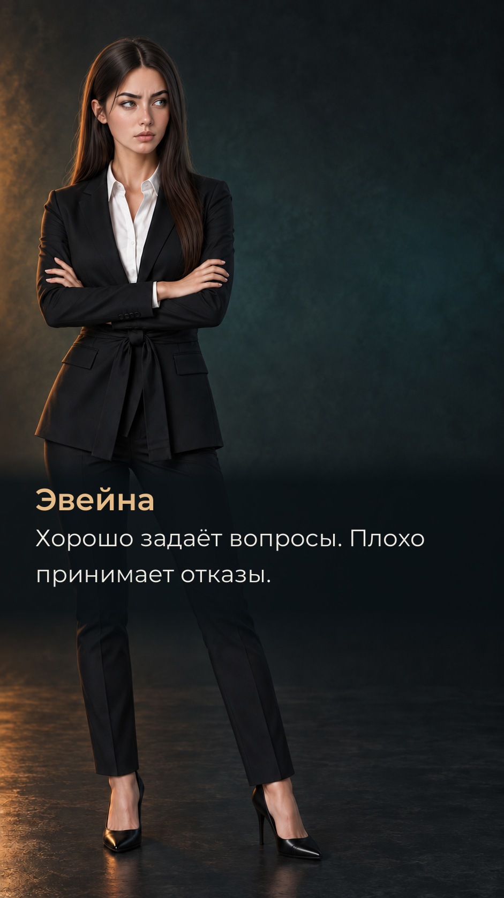

История
Ждать разрешения
у неё нет времени
Нужные Эвейне исследования ведутся в Академии Мемории — но доступ к ним ограничен. Эвейна поступает в Академию и готова лгать, красть и лезть туда, куда её не пускают.
Всё ради отца, который теряет память. Но теперь из её собственной памяти исчезают несколько часов. Зато остаются синяк, мокрая одежда и мужчина, который ждёт, что она его узнает.
Он нахален, самоуверен и явно знает больше, чем говорит. Эвейне одновременно хочется вытащить из него все секреты и раскроить ему череп. И ведь он тут такой не один.
«Неправильный выбор» — научно-фантастическая визуальная новелла с расследованием, драмой и романтическими отношениями. Ты играешь за Эвейну. Кому врать, кому доверять и кого подпускать ближе — решать тебе.
Желательно не путать. Хотя соблазн будет.